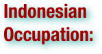
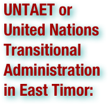
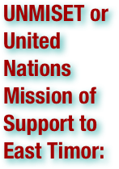
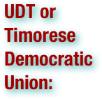
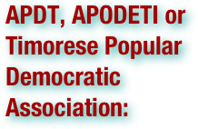
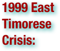

Genocide in East Timor: Terms
Please scan the terms to find what you are looking for - they are not in order!
.pdf (. . . )


The Democratic Republic of Timor-Leste, commonly known as East Timor, is a state in Southeast Asia. It comprises the eastern half of the island of Timor, the nearby islands of Atauro and Jaco, and Oecusse, an exclave on the northwestern side of the island, within Indonesian West Timor. The small country of 15,410 km² (5,400 sq. mi) is located about 640 km (400 mi) northwest of Darwin, Australia. East Timor was colonized by Portugal in the 16th century, and was known as Portuguese Timor until Portugal's decolonization of the country. In late 1975, East Timor declared its independence, but later that year was invaded and occupied by Indonesia and was declared Indonesia's 27th province the following year. In 1999, following the United Nations-sponsored act of self-determination, Indonesia relinquished control of the territory and East Timor became the first new sovereign state of the 21st century on May 20, 2002. East Timor is one of only two predominantly Roman Catholic countries in Asia, the other being the Philippines. East Timor is a lower-middle-income economy. It continues to suffer the after effects of a decades-long independence struggle against Indonesia, which damaged infrastructure and displaced thousands of civilians. It is placed 120th by Human Development Index (HDI). (wikipedia.org)


Indonesia occupied East Timor from December 1975 to October 1999. After centuries of Portuguese colonial rule in East Timor, a 1974 coup in Portugal led to decolonization among its former colonies, creating instability in East Timor and leaving its future uncertain. After a small-scale civil war, the pro-independence FRETILIN declared victory in the capital city of Diliand declared an independent East Timor on 28 November 1975. Claiming its assistance had been requested by East Timorese leaders, Indonesian military forces invaded on 7 December and by 1979 had all but destroyed armed resistance to the occupation. Following a controversial "Popular Assembly" which many said was not a genuine act of self-determination, Indonesia declared the territory a province of Indonesia. For twenty-five years the people of East Timor were subjected to extrajudicial executions, torture, and starvation. The 1991 Santa Cruz Massacre caused outrage around the world, and reports of other such killings were numerous. Resistance to Indonesian rule remained strong; in 1996 the Nobel Peace Prize was awarded to two men from East Timor, Carlos Filipe Ximenes Belo and José Ramos-Horta, for their ongoing efforts to peacefully end the occupation. A 1999 vote to determine East Timor's future resulted in an overwhelming majority in favor of independence, and in 2002 East Timor became an independent nation. The occupation claimed between 102,800 and 183,000 East Timorese lives, out of a population of less than 700,000. Immediately after the invasion, the United Nations General Assembly and Security Council passed resolutions condemning Indonesia's actions and calling for immediate withdrawal. The governments of the United States, Australia, and United Kingdom were supportive of Indonesia throughout the occupation. Australia and Indonesia were the only nations in the world to recognize East Timor as a province of Indonesia, and soon afterwards began negotiations to divide resources found in theTimor Gap. Other governments, including Japan, Canada and Malaysia, also supported the Indonesian government. The invasion and suppression of East Timor's independence movement, however, caused great harm to Indonesia's reputation and international credibility. After the 1999 vote for independence, paramilitary groups working with the Indonesian military undertook a final wave of violence during which most of the country's infrastructure was destroyed. After Indonesian forces left East Timor, the United Nations Transitional Administration in East Timor administered the territory for two years, establishing a Serious Crimes Unit to investigate and prosecute crimes committed during 1999. Its limited scope and the small number of sentences delivered by Indonesian courts have caused numerous observers to call for an international tribunal for East Timor. (wikipedia.org)


The United Nations Transitional Administration in East Timor (UNTAET) provided an interim civil administration and a peacekeeping mission in the territory of East Timor, from its establishment on October 25, 1999 until its independence on May 20, 2002 following the outcome of the East Timor Special Autonomy Referendum. Security Council Resolution 1272 established the transitional administration in 1999, and its responsibilities included providing a peacekeeping force to maintain security and order; facilitating and coordinating relief assistance to East Timorese; facilitating emergency rehabilitation of physical infrastructure; administering East Timor and creating structures for sustainable governance and the rule of law; and assisting in the drafting of a new constitution and conducting elections. It was led by Brazil's Sergio Vieira de Mello (Special Representative of the Secretary-General for East Timor) and the Philippines's Lieutenant General Jaime de los Santos (Supreme Commander of the United Nations' Peacekeeping Force (PKF)). A coalition of nations sent troops to support the peace keeping mission. The forces were led by Australia, which provided the largest contingent and the out of theatre base for operations, supported by New Zealand, who sent the second largest contingent, and took responsibility for the more volatile southern half of the main border, France, whose special forces joined the ANZACs on the first day, as well as contingents from Argentina, Brazil, Denmark, Fiji, Ireland, Japan, Malaysia, Russia, Singapore, South Korea, Thailand, the Philippines, Portugal, Sweden, and the United Kingdom. While the United States supported the transition authority, it did so mainly by underwriting contracts to replace destroyed infrastructure and thus avoided a direct military involvement, allowing the ANZAC led force to take the lead. The United States did, however, deploy a contingent of American police officers to serve with the International Police. UNTAET was established on October 25, 1999 and was abolished on May 20, 2002 with most functions passed to the East Timor government. The military and police forces were transferred to the newly created United Nations Mission of Support to East Timor (UNMISET). (wikipedia.org)

The Revolutionary Front for an Independent East Timor is a leftist political party in East Timor. They presently hold a plurality of seats in the National Parliament and formed the government in East Timor from independence until 2007. The party began as a resistance movement that fought for the independence of East Timor, first from Portugal and then from Indonesia, between 1974 and 1998. It was originally called the Timorese Social Democratic Association (ASDT). After East Timor gained its independence from Indonesia, FRETILIN became one of several parties competing for power in a multi-party system. Fretilin holds consultative status with the Socialist International. (wikipedia.org)

Portuguese Timor was the name of East Timor when it was under Portuguese control. During this period, Portugal shared the island of Timor with the Netherlands East Indies, and later with Indonesia. The first Europeans to arrive in the region were Portuguese in 1515. Dominican friars established a presence on the island in 1556, and the territory was declared a Portuguese colony in 1702. Following a Lisbon-instigated decolonization process in 1974, Indonesia invaded the territory in 1975 ending Portuguese rule. The invasion was never accepted by other countries so Portuguese Timor existed officially until independence of Timor-Leste in 2002. (wikipedia.org)

The East Timorese independence referendum was a referendum which was held throughout East Timor on the 30th of August 1999. The referendum's origins lay with the request made by President Bacharuddin Jusuf Habibie to the United Nations Secretary-General Kofi Annan on January 27, 1999, for the United Nations to hold a referendum, whereby the Indonesian province will be given choice of greater autonomy within Indonesia or independence. In the preceding months, President Habibie made various public statements whereby he mentioned that the costs of maintaining monetary subsidies to support the province is not balanced by any measurable benefit to Indonesia. Due to this unfavorable cost-benefit analysis, the most rational decision is for the province, which was not part of original 1945 boundaries of Indonesia, to be given democratic choice on whether they want to remain within Indonesia or not. This is also inline with Habibie's democratization program in the immediate post-Suharto period. As the follow-up step to Habibie's request, the United Nations organized meeting between Indonesian government and the Portuguese government (as the previous colonial authority over East Timor). On May 5, 1999, these talks resulted in the “Agreement between the Republic of Indonesia and the Portuguese Republic on the Question of East Timor” which spell-out the details of the requested referendum. The referendum was to be held to determine whether East Timor would remain part of Indonesia, as a Special Autonomous Region, or separate from Indonesia. The referendum was organized and monitored by the United Nations Mission in East Timor (UNAMET) and 450,000 people were registered to vote including 13,000 outside East Timor.

United Nations Security Council Resolution 1272, adopted unanimously on October 25, 1999, after recalling previous resolutions on East Timor (Timor Leste), particularly resolutions 384 (1975), 389 (1976), 1236 (1999), 1246 (1999), 1262 (1999) and 1264 (1999), the Council established the United Nations Transitional Administration in East Timor (UNTAET) that was responsible for the administration of the territory until its independence in 2002. (wikipedia.org)


The United Nations Mission of Support to East Timor (UNMISET) was established on 20 May 2002, the same day which East Timor became an internationally recognized independent state and the United Nations Transitional Administration in East Timor (UNTAET) came to an end. Military and police forces from contributing nations were put under control of the Special Representative of the Secretary-General. Following a progress report submitted by the Secretary-General in 2003, the initial 12 month mandate was extended into two years, subsequently extended to 20 May 2005, after which it was replaced by United Nations Office in Timor Leste (UNOTIL). A final report was then presented to the Security Council and a statement was made about the continuing help with a Border Patrol Unit. The mandates of the Security Council Resolutions also provided for a Serious Crimes Unit to investigate the events of 1999. (wikipedia.org)

The Santa Cruz massacre was the shooting of East Timorese pro-independence demonstrators in the Santa Cruz cemetery in the capital, Dili, on 12 November 1991, during the Indonesian occupation of East Timor. . . At least 250 East Timorese were killed in the massacre. . . In response to the massacre, activists around the world organized in solidarity with the East Timorese. Although a small network of individuals and groups had been working for human rights and self-determination in East Timor since the occupation began, their activity took on a new urgency after the 1991 massacre. . . The television pictures of the massacre were shown worldwide, causing the Indonesian government considerable embarrassment. The coverage was a vivid example of how growth of new media in Indonesia was making it increasingly difficult for the "New Order" to control information flow in and out of Indonesia, and that in the post-Cold War 1990s, the government was coming under increasing international scrutiny. Copies of the Santa Cruz footage were distributed back into Indonesia allowing more Indonesians to see the actions of their government uncensored. A number of pro-democracy student groups and their magazines began to openly and critically discuss not just East Timor, but also the "New Order" and the broader history and future of Indonesia. The US Congress voted to cut off funding for IMET training of Indonesian military personnel. However, arms sales continued from the US to the Indonesian National Armed Forces. President Clinton cut off all US military ties with the Indonesian military in 1999. The massacre prompted the Portuguese government to increase its diplomatic campaign. Portugal unsuccessfully tried to apply international pressure by raising the issue with its fellow European Union members in their dealings with Indonesia. However, other EU countries like the UK had close economic relations with Indonesia, including arms sales, and were reluctant to jeopardize these. In Australia, there was criticism of the federal government's recognition of Jakarta's sovereignty over East Timor. The government had been promoting increased ties with the Indonesian military at the time of the massacre, but in 1999 would cut off military ties in response to the violence after that year's independence referendum. Australian foreign minister Gareth Evans, described the killings as 'an aberration, not an act of state policy'. Commemorated as a public holiday in now independent East Timor, 12 November is remembered by the East Timorese as one of the bloodiest days in their history, one which drew international attention to their fight for independence. (wikipedia.org)

The Timor Gap is often used to refer to an area of ocean between Timor, Indonesia and Australia. In actuality, it refers to a gap in a seabed boundary which Australia and Indonesia negotiated in 1972 – the part of the line they could not define because, Portugal, who governed East Timor, declined to participate in the negotiations. East Timor subsequently came under Indonesian control, and Australia and Indonesia negotiated the Timor Gap Treaty in 1989. (wikipedia.org)

Dili, spelled Díli in Portuguese, is the capital and largest city of East Timor. It lies on the northern coast of Timor island, the easternmost of the Lesser Sunda Islands. Dili is the chief port and commercial centre for East Timor, and has approximately 150,000 inhabitants. (wikipedia.org)


Self-determination is the principle in international law that nations have the right to freely choose their sovereignty and international political status with no external compulsion or external interference. The principle does not state how the decision is to be made, or what the outcome should be, whether it be independence, federation, protection, some form of autonomy or even full assimilation. Neither does it state what the delimitation between nations should be — or even what constitutes a nation. In fact, there are conflicting definitions and legal criteria for determining which groups may legitimately claim the right to self-determination. (wikipedia.org)


The Timorese Democratic Union is a conservative political party in East Timor. It was the first party to be established in the country in 1974, following the Carnation Revolution in Portugal. It originally advocated continued links with Portugal, using the Tetum slogan Mate bandera hum meaning 'In the shadow of the Portuguese flag', but later formed an alliance with the more left-wing Frente Revolucionaria de Timor Leste Independente (Fretilin) to work towards independence in January 1975. This alliance later broke up among accusations that Fretilin was not exercising control over its more extreme members, although by this time, UDT leaders like Francisco Lopes da Cruz had held meetings with BAKIN, the Indonesian military intelligence, which had signaled Jakarta's misgivings about an independent state under Fretilin control. In August of that year, the UDT staged a coup against the Portuguese administration, and a three month civil war erupted. Many UDT politicians and supporters fled across the border to West Timor, where they were required to sign a petition calling for East Timor's incorporation into Indonesia. One of the UDT's most senior leaders, Mario Viegas Carrascalão, sided with the Indonesian regime, and served as the Governor of Indonesia's '27th Province' between 1987 and 1992. His brother, João, however, led the UDT in exile in Portugal and Australia, later joining with Fretilin in a national unity movement called the Conselho Nacional de Resistência Maubere (CNRM or National Council of Maubere Resistance), later called the Conselho Nacional de Resistência Timorense (CNRT or National Council of Timorese Resistance). Following the change of government in Indonesia in 1998, and subsequently the change of policy, the UDT was able to organize in East Timor, where it supported the independence campaign. (wikipedia.org)


The Timorese Popular Democratic Association was a political party in East Timor established in 1974, which favored integration with Indonesia. Along with another East Timor party, the Timorese Democratic Union (UDT), it signed a petition in 1975 calling for Indonesia to annex the region. . . The popularity of APODETI was low compared to the pro-independence FRETILIN and even the more moderate UDT. Still, it received considerable support from the Indonesian government, in the form of financial donations and declarations of solidarity. When APODETI leaders announced that 70 percent of the population endorsed integration, Indonesian officials repeated the claim and it became a staple of media reports in Jakarta. At the same time, party leaders were ridiculed in East Timor, and some traveled accompanied by bodyguards. This, in turn, led to more belligerent statements by APODETI leaders. (wikipedia.org)

The National Council of Maubere Resistance (Portuguese: Conselho Nacional da Resistência Maubere, or CNRM) was an umbrella organization of East Timorese individuals and organizations dedicated to resisting the Indonesian occupation of 1975–1999. It was started in 1979, shortly before Xanana Gusmão became the leader of FRETILIN. In 1998 it became the National Council of Timorese Resistance (Portuguese: Conselho Nacional de Resistência Timorense), or CNRT. (wikipedia.org)

The Commission for Reception, Truth and Reconciliation in East Timor was an independent truth commission established in East Timorin 2001 under the UN Transitional Administration in East Timor (UNTAET) and charged to “inquire into human rights violations committed on all sides, between April 1974 and October 1999, and facilitate community reconciliation with justice for those who committed less serious offenses.” The Commission delivered its 2,500-page report entitled Chega meaning "stop" or "enough" in Portuguese, covering human rights violations from 1974 to 1999, to the President of East Timor on 31 October 2005. The President then handed the report to the Secretary General of the UN as required by law, on 20 January 2006. (wikipedia.org)

Pancasila is the official philosophical foundation of the Indonesian state. Pancasila consists of two Sanskrit words, "pañca" meaning five, and "sīla" meaning principles. It comprises five principles held to be inseparable and interrelated: 1) Belief in the one and only God, 2) Just and civilized humanity, 3) The unity of Indonesia, 4) Democracy guided by the inner wisdom in the unanimity arising out of deliberations amongst representatives, and 5) Social justice for the all of the people of Indonesia. (wikipedia.org)

Animism refers to the belief that non-human entities are spiritual beings, or at least embody some kind of life-principle. Animism encompasses the beliefs that there is no separation between the spiritual and physical (or material) worlds, and souls or spirits exist, not only in humans, but also in all other animals, plants, rocks, natural phenomena such as thunder, geographic features such as mountains or rivers, or other entities of the natural environment. Animism may further attribute souls to abstract concepts such as words, true names, or metaphors in mythology. Animism is particularly widely found in the religions of indigenous peoples, perhaps most interestingly in Shinto and Sererism, and some forms of Hinduism, Sikhism, Buddhism,Pantheism, Christianity and Neopaganism. (wikipedia.org)

The transmigration program was an initiative of the Dutch colonial government, and later continued by Indonesian government to move landless people from densely populated areas of Indonesia to less populous areas of the country. This involved moving people permanently from the island of Java, but also to a lesser extent from Bali and Madura, to less densely populated areas including Papua, Kalimantan, Sumatra, and Sulawesi. The stated purpose of this program was to reduce the considerable poverty and overpopulation on Java, to provide opportunities for hard-working poor people, and to provide a workforce to better utilize the natural resources of the outer islands. The program, however, has been controversial as fears from native populations of "Javanization" and "Islamization" have strengthened separatist movements and communal violence. (wikipedia.org)


The 1999 East Timorese crisis began with attacks by anti-independence militants on civilians, and expanded to general violence throughout the country, centered in the capital Dili. The violence erupted after a majority of eligible voters in the population of East Timor chose independence from Indonesia. Some 1,400 civilians are believed to have died. A UN force (InterFET) consisting mainly of Australian Defense Force personnel was deployed to East Timor to establish and maintain peace. (wikipedia.org)


The International Force for East Timor was a multinational peacekeeping task force, mandated by the United Nations to address the humanitarian and security crisis which took place in East Timor from 1999–2000 until the arrival of United Nations peacekeepers. INTERFET was commanded by an Australian, Major General Peter Cosgrove. (wikipedia.org)